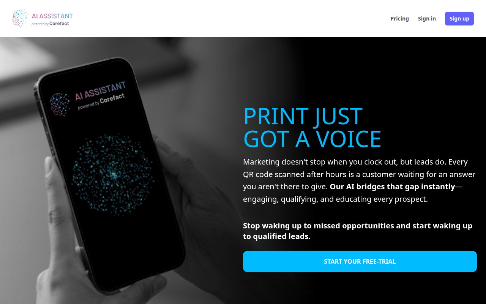
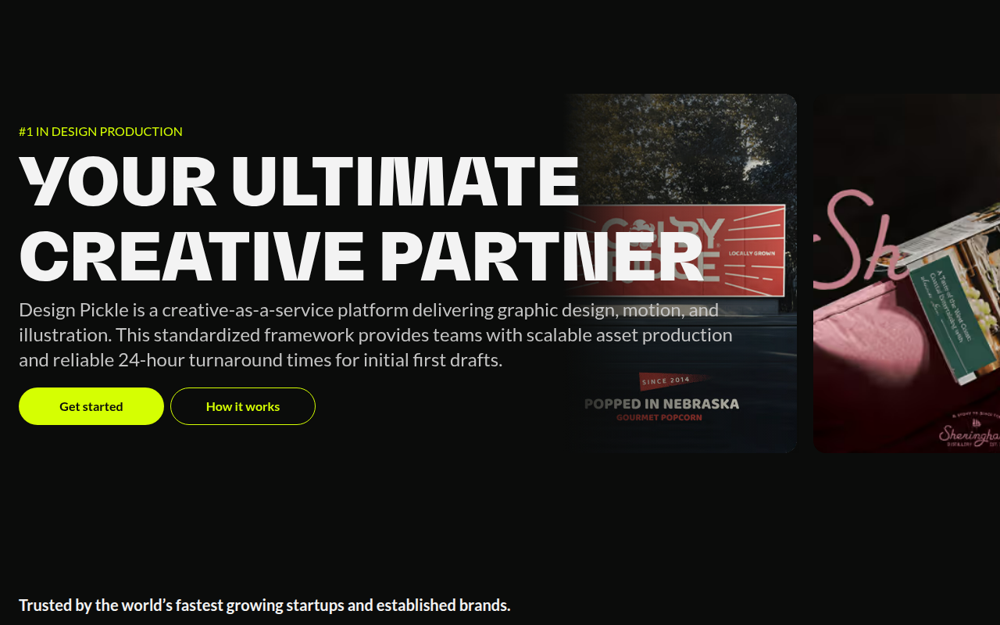

About
I’m a hands-on technical lead and software engineer with 15+ years of experience building, modernizing, and scaling business-critical web applications. My strongest focus is the Ruby on Rails ecosystem, from long-running legacy platforms to modern Rails 8.1 systems.
Over the past six years at Corefact Corporation, I led full-stack Ruby on Rails development across legacy and modern systems for six years. In my final year, I owned technical delivery and team leadership for AI Assistant by Corefact, building an end-to-end voice assitant platform with Rails 8.1 and modern AI tools.
I like working at the point where architecture, delivery, and team health meet: translating business goals into technical roadmaps, reducing operational risk, and helping developers ship with better standards, reviews, tests, and onboarding.
Experience
-
Aug 2020 — Jul 2026
Lead Ruby on Rails Developer · Corefact
Led full-stack Ruby on Rails development across legacy and modern systems, spanning architecture, performance optimization, and production operations. Spearheaded the end-to-end development of AI Assistant by Corefact using Rails 8.1, AWS, Stripe, Docker, Solid Queue, OpenAI API, and other AI services. Improved application performance by optimizing database access and background processing. Directed a team of four engineers, drove technical decisions, and integrated external voice tech. Delivered OpenAI-powered capabilities and introduced AI-assisted workflows to accelerate delivery and enhance frontend experiences.
-
Sept 2019 — Jul 2020
Sr Ruby on Rails Developer · Design Pickle
Worked on Design Pickle’s creative-as-a-service platform, which helps companies request and manage graphic design, motion, and illustration work. Contributed product features in Rails 5.2 and supported Stripe-powered subscription and billing flows.
-
Sept 2014 — Aug 2019
Sr Ruby on Rails Developer · Corefact
Worked on Corefact’s Rails 2.3 monolith with jQuery, Bootstrap, and Authorize.net payments. Started a new Rails 4 project from scratch using Devise, CanCan, Sidekiq, Redis, RSpec, and Capistrano.
-
Jun 2012 — Aug 2014
Ruby on Rails Developer · Zauber SA
Contributed to Flowics, a high-concurrency cloud platform for live broadcast graphics, social media integration, and real-time audience engagement. Built full-stack Rails 3 features and supported enterprise payment integrations.
-
Nov 2010 — Jun 2012
Java Developer · Cubecorp Software Factory S.A.
Developed enterprise credit account management systems, financial reporting applications, and fraud detection tools with transactional backend components.
-
Sept 2009 — Nov 2010
Java Developer · Epidata Consulting S.R.L.
Participated in the reengineering of a core banking compensation system for Banelco, working through requirements analysis, architecture redesign, and technical specification.
Projects
-
AI Assistant by Corefact
Owned development and operations for a Rails 8.1 AI assistant that gives print marketing a voice, qualifying leads through conversational flows powered by OpenAI API, Twilio, and external voice technology providers. Used the latest AI tools to accelerate feature delivery, strengthen code review, and design and build advanced frontend UIs.

-
Design Pickle Platform
Creative-as-a-service platform for requesting and managing graphic design, motion, and illustration work with subscription billing and product workflows.

-
Flowics Broadcast Platform
Built full-stack features for a high-concurrency cloud platform powering live broadcast graphics, social media integration, and real-time audience engagement.